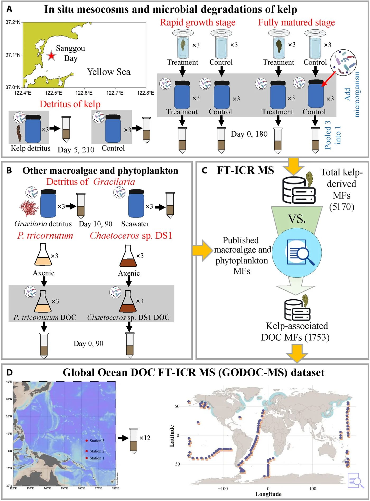
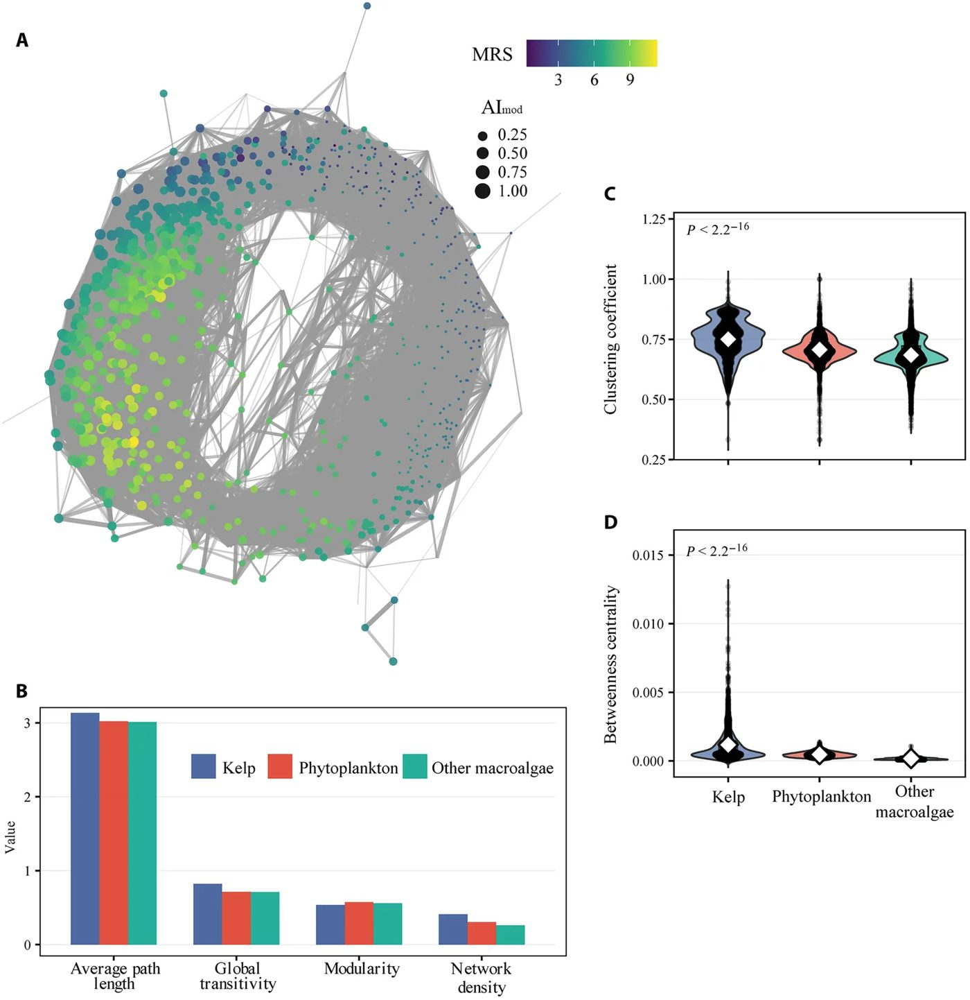

Dengiz o‘tlari uglerodni okean tubida ming yillar davomida saqlaydi


Rasmning to'liq tavsifi
Dengiz oʻtlariga (kelp) bogʻliq erigan organik uglerod (EOU) molekulyar izlarini global okean boʻylab kuzatish uchun eksperimental ish jarayoni. (A) In situ mezokosmlar va mikrobial degradatsiya. Xaltali mezokosmlar Sanggou koʻrfazidagi (Sariq dengiz) dengiz oʻtlari fermasida jadal oʻsish (yanvar) va toʻliq yetilish (iyun) bosqichlarida joylashtirildi, har birida uchta dengiz oʻti (Saccharina japonica) sporofiti va faqat dengiz suvi boʻlgan uchta nazorat namunasi mavjud. Har bir xaltadan 10 litr EOU bilan boyitilgan dengiz suvi filtrlandi va qorongʻu joyda tabiiy mikrobial inokulyat bilan 180 kun davomida alohida inkubatsiya qilindi (n = 3 har bir shart uchun, 0 va 180-kunlarda namunalar olindi). Dengiz oʻtlari detritining parallel degradatsiyasi 210 kun davomida oʻtkazildi (5 va 210-kunlarda namunalar olindi; uch nusxada). (B) EOU boʻyicha qiyosiy tajribalar: qoʻshimcha inkubatsiyalar tarkibiga Gracilaria detriti (10 va 90 kun) va aksenik diatom madaniyatlari (Phaeodactylum tricornutum va Chaetoceros sp. DS1; 0 va 90 kun) kiritildi, har biri uch nusxada. Bir xil sharoitdagi takroriy idishlardan olingan EOU ekstraktlari qattiq fazali ekstraksiyadan oʻtkazildi, birlashtirildi va keyin FT-ICR MS yordamida tahlil qilindi. (C) Konservativ filtrlash quvuri dengiz suvi nazorat namunalari va turli fitoplankton va makroalgal molekulyar formulalar (MF) (ham nashr etilgan maʼlumotlar toʻplamidan, ham ushbu tadqiqotdan) oʻz ichiga olgan birlamchi ishlab chiqaruvchilarning maʼlumotlar bazasi bilan umumiy boʻlgan MFni olib tashladi, natijada dengiz oʻtlariga bogʻliq 1753 ta noyob MF olindi. (D) Global okeanda aniqlash. Tinch okeanining gʻarbiy qismidan olingan EOU namunalari tahlil qilindi va global okean EOU FT-ICR MS (GODOC-MS) maʼlumotlar toʻplamini yaratish uchun global okean FT-ICR MS maʼlumotlar toʻplamlari bilan birlashtirildi. Keyin dengiz oʻtlariga bogʻliq EOU MFlari GODOC-MSga nisbatan soʻrov qilindi; xaritadagi koʻk rangli doiralar dengiz oʻtlariga bogʻliq EOU signallari aniqlangan stansiyalarni koʻrsatadi.
Laminariya kabi qirg‘oqbo‘yi suvo‘tlari katta miqdorda karbonat angidridni yutadi. Yangi tadqiqot shuni ko‘rsatadiki, bu uglerodning bir qismi barqaror birikmalarga aylanib, oqimlar orqali minglab kilometr uzoqlikdagi okean tubiga yetib boradi. Bu okeanda uglerodni uzoq muddatli saqlashning yangi va muhim yo‘lini ochib beradi.
Asosiysi
- Laminariya birlamchi mahsulotining 62% gacha qismini erigan uglerod sifatida chiqaradi.
- Suvo‘tlariga xos barqaror molekulalar 5500 metr chuqurlikda topildi.
- Qirg‘oq ekotizimlari yiliga 481 teragrammgacha uglerodni bog‘lashi mumkin.
Batafsil
Olimlar Saccharina japonica laminariyasidan ajralib chiquvchi erigan organik uglerodni (DOC) tahlil qilish uchun o‘ta yuqori aniqlikdagi mass-spektrometriyadan (FT-ICR MS) foydalandilar. 180 kunlik mikrobial parchalanish tajribalari davomida uglerod labil (tez parchalanadigan) va rekaltsitrant (parchalanishga chidamli) fraksiyalarga ajratildi. Birikmalarning barqarorligini baholash uchun molekulyar rekaltsitrantlik indeksi (MRS) ishlab chiqildi.
Tahlillar shuni ko‘rsatdiki, laminariyaga xos molekulyar signallar qirg‘oqdan 10 000 kilometrgacha masofada va 5500 metr chuqurlikda aniqlangan. Ushbu birikmalar yuqori MRS indeksiga ega, bu ularning mikroorganizmlar tomonidan parchalanishga chidamliligini tasdiqlaydi. Qirg‘oqbo‘yi suvo‘tlari ekotizimlarining global uglerod saqlashdagi hissasi yiliga 320,7–481,1 teragramm uglerod deb baholanmoqda.
Cheklovlar
Tadqiqot laboratoriya modellariga asoslangan bo‘lib, ular okeandagi murakkab tabiiy jarayonlarni to‘liq aks ettirmasligi mumkin.
Maqolaning to'liq tarjimasi
Annotatsiya
Atmosfera karbonat angidridining dengiz birlamchi produtsentlari tomonidan erigan organik uglerod (EOU) va zarrachali organik uglerodga (ZOU) aylanishi uglerodning noorganik holatdan organik holatga oʻtishining muhim oqimini ifodalaydi va global iqlimni tartibga solishda asosiy rol oʻynaydi. Dengiz EOU havzasi taxminan 660 milliard metrik tonna uglerodga baholanadi, bunda chidamli EOU (ChEOU) umumiy EOU havzasining 95% dan ortigʻini tashkil qiladi. Ushbu keng havza molekulyar xilma-xillikni oʻz ichiga oladi: dengiz oziq-ovqat zanjirlari orqali tez aylanadigan labil EOU (LEOU) molekulalaridan tortib, ming yillar davomida saqlanib qoladigan ChEOU molekulalarigacha. ChEOU asosan mikrobial uglerod nasosi orqali LEOU birikmalarining mikrobial qayta ishlanishi natijasida hosil boʻladi, bu okeanda uglerodni uzoq muddatli sekvestrlashning asosiy yoʻlidir.
Ushbu molekulyar xilma-xillik va uglerodni saqlashdagi ahamiyatiga qaramay, okean EOU shakllanishi haqidagi hozirgi tushuncha deyarli faqat fitoplanktondan olingan EOUga qaratilgan boʻlib, boshqa birlamchi produtsentlarning hissasini katta darajada eʼtiborsiz qoldiradi. Dengiz makro-suv oʻtlari global qirgʻoq okeanidagi eng keng va samarali oʻsimlik yashash joylarini tashkil etadi, ular uglerodni qirgʻoq suvlaridagi fitoplanktondan bir barobar yuqori tezlikda fiksatsiya qiladi va chiqaradi. Bu yuqori mahsuldorlik makro-suv oʻtlaridan olingan EOU dengiz EOU havzasiga sezilarli hissa qoʻshishi mumkinligini koʻrsatadi. Biroq, makro-suv oʻtlarining dengiz EOU oqimlariga qoʻshgan hissasi molekulyar murakkablik va uslubiy cheklovlar tufayli asosan oʻrganilmagan holda qolmoqda.
Muhim
Makro-suv oʻtlari uglerodning yuqori samarali manbalari hisoblanadi, biroq ularning global EOU havzasiga qoʻshgan hissasi tahlil murakkabligi tufayli shu paytgacha yetarlicha baholanmagan.
Izoh
EOU (DOC) — erigan organik uglerod; ChEOU (RDOC) — mikrobial parchalanishga chidamli fraksiya; LEOU (LDOC) — mikroorganizmlar tomonidan tez isteʼmol qilinadigan labil fraksiya.
Ehtiyot bo'ling
Kuzatuv tadqiqoti: mavjud maʼlumotlar potensial bogʻliqlikni koʻrsatadi, ammo qoʻshimcha tasdiqlarsiz global miqyosda sabab-oqibat bogʻliqligini isbotlamaydi.
Laminariya (Saccharina japonica) tomonidan hosil boʻlgan EOU dinamikasini yetishtirish sharoitida tavsiflash uchun biz EOU ajralib chiqish tezligini va keyingi mikrobial parchalanish namunalarini laminariya yetishtirishning ikki xil fenologik bosqichida: tez oʻsish bosqichi va toʻliq yetilgan bosqichda miqdoriy aniqladik (Rasm 2). Biz EOUning yangi ajralib chiqishida bosqichga bogʻliq sezilarli oʻzgarishlarni kuzatdik, bunda toʻliq yetilgan bosqich tez oʻsish bosqichiga (43,6 ± 19,3 mkmol g⁻¹ yangi vazn (YV) kuniga) qaraganda sezilarli darajada yuqori EOU ajralib chiqish tezligini [64,7 ± 3,6 mkmol g⁻¹ YV kuniga] koʻrsatdi (P < 0,05) (Rasm 2, A va B). Dengiz suvi fonini ayirgandan keyin sof EOU konsentratsiyalari tez oʻsish bosqichida 47 ± 21 mkm va toʻliq yetilgan bosqichda 334 ± 18 mkm ni tashkil etdi.

Rasmning to'liq tavsifi
Dengiz oʻtlaridan olingan EOU ishlab chiqarishning vaqtinchalik dinamikasi va turli oʻsish bosqichlarida mikrobial degradatsiya. EOU konsentratsiyasidagi oʻzgarishlar (A va B) dengiz oʻtlarini yetishtirishning jadal oʻsish va toʻliq yetilish bosqichlarida va (C va D) bir xil oʻsish bosqichlaridan olingan EOUning uzoq muddatli qorongʻu mikrobial degradatsiyasi davomida. Nazorat tajribalari dengiz oʻtlarisiz inkubatsiya qilingan atrof-muhit dengiz suvidan iborat edi. Dengiz oʻtlaridan olingan sof EOU har bir vaqt nuqtasida nazorat qiymatlarini tajriba qiymatlaridan ayirish orqali hisoblab chiqildi. Qiymatlar uchta oʻlchovning oʻrtacha ± SD koʻrsatkichlarini ifodalaydi.
Laminariyadan olingan EOUning keyingi uzoq muddatli mikrobial parchalanish eksperimentlari (180 kun) ikki fazali EOU dinamikasini aniqladi (Rasm 2, C va D). Dastlabki tez isteʼmol birinchi 90 kun ichida sodir boʻldi, shundan soʻng 90-kundan 180-kungacha EOU konsentratsiyalari va mikrobial koʻpayish barqarorlashdi (Rasm SN, A va B), bu qoldiq EOUning mikrobial parchalanishga asosan chidamli (ChEOU) ekanligini koʻrsatadi. Nazorat guruhlari uchun tuzatishdan soʻng, qoldiq EOU (operativ ravishda ChEOU deb belgilangan) tez oʻsish va toʻliq yetilgan bosqichlar uchun dastlabki EOUning mos ravishda 20,1% (9 ± 10 mkm) va 30,5% (102 ± 13 mkm) qismini tashkil etdi.
Muhim
EOUning ajralib chiqish tezligi oʻsish bosqichiga bogʻliq boʻlib, ajralib chiqqan uglerodning 30,5% gacha qismi chidamli shaklga (ChEOU) oʻtadi.
Izoh
FT-ICR MS (Furye transformatsiyasi ion siklotron rezonansi mass-spektrometriyasi) — bir namunadagi minglab individual molekulyar formulalarni aniqlash imkonini beruvchi oʻta yuqori aniqlikdagi usul.
Ehtiyot bo'ling
Laboratoriya parchalanish eksperimentlari murakkab tabiiy sharoitlarni toʻliq takrorlamaydi, shuning uchun labillik baholari okeandagi haqiqiy koʻrsatkichlardan farq qilishi mumkin.
Rasmning to'liq tavsifi
Dengiz oʻtlariga (kelp) bogʻliq erigan organik uglerod (EOU) molekulyar izlarini global okean boʻylab kuzatish uchun eksperimental ish jarayoni. (A) In situ mezokosmlar va mikrobial degradatsiya. Xaltali mezokosmlar Sanggou koʻrfazidagi (Sariq dengiz) dengiz oʻtlari fermasida jadal oʻsish (yanvar) va toʻliq yetilish (iyun) bosqichlarida joylashtirildi, har birida uchta dengiz oʻti (Saccharina japonica) sporofiti va faqat dengiz suvi boʻlgan uchta nazorat namunasi mavjud. Har bir xaltadan 10 litr EOU bilan boyitilgan dengiz suvi filtrlandi va qorongʻu joyda tabiiy mikrobial inokulyat bilan 180 kun davomida alohida inkubatsiya qilindi (n = 3 har bir shart uchun, 0 va 180-kunlarda namunalar olindi). Dengiz oʻtlari detritining parallel degradatsiyasi 210 kun davomida oʻtkazildi (5 va 210-kunlarda namunalar olindi; uch nusxada). (B) EOU boʻyicha qiyosiy tajribalar: qoʻshimcha inkubatsiyalar tarkibiga Gracilaria detriti (10 va 90 kun) va aksenik diatom madaniyatlari (Phaeodactylum tricornutum va Chaetoceros sp. DS1; 0 va 90 kun) kiritildi, har biri uch nusxada. Bir xil sharoitdagi takroriy idishlardan olingan EOU ekstraktlari qattiq fazali ekstraksiyadan oʻtkazildi, birlashtirildi va keyin FT-ICR MS yordamida tahlil qilindi. (C) Konservativ filtrlash quvuri dengiz suvi nazorat namunalari va turli fitoplankton va makroalgal molekulyar formulalar (MF) (ham nashr etilgan maʼlumotlar toʻplamidan, ham ushbu tadqiqotdan) oʻz ichiga olgan birlamchi ishlab chiqaruvchilarning maʼlumotlar bazasi bilan umumiy boʻlgan MFni olib tashladi, natijada dengiz oʻtlariga bogʻliq 1753 ta noyob MF olindi. (D) Global okeanda aniqlash. Tinch okeanining gʻarbiy qismidan olingan EOU namunalari tahlil qilindi va global okean EOU FT-ICR MS (GODOC-MS) maʼlumotlar toʻplamini yaratish uchun global okean FT-ICR MS maʼlumotlar toʻplamlari bilan birlashtirildi. Keyin dengiz oʻtlariga bogʻliq EOU MFlari GODOC-MSga nisbatan soʻrov qilindi; xaritadagi koʻk rangli doiralar dengiz oʻtlariga bogʻliq EOU signallari aniqlangan stansiyalarni koʻrsatadi.

Rasmning to'liq tavsifi
Dengiz oʻtlaridan olingan EOUning taksonomik oʻziga xosligi va molekulyar tavsifi. (A) Makroalglar va fitoplankton oʻrtasidagi noyob va umumiy MFni koʻrsatadigan UpSet grafigi. (B) Makroalglar va fitoplankton oʻrtasidagi Jaccard oʻxshashlik indekslarining ierarxik klasterlash issiqlik xaritasi. (C) Dengiz oʻtlariga bogʻliq LDOC va RDOC fraksiyalarining molekulyar tarkibini solishtiruvchi Van Krevelen diagrammalari. (D) Dengiz oʻtlariga bogʻliq LDOC va RDOCdagi birikmalar sinflari boʻyicha MF soni. Cond., kondensatsiyalangan; HC, uglevodorod; Unsat., toʻyinmagan.

Rasmning to'liq tavsifi
Dengiz oʻtlariga bogʻliq labil (Kelp-LDOC) va rekaltsitrant (Kelp-RDOC) EOU fraksiyalarida MRS taqsimoti. (A) Kelp-RDOCni Kelp-LDOCdan ajratib turuvchi RF tomonidan aniqlangan dominant molekulyar indekslarning (AImod, DBE, GFE, H/C va NOSC) z-balli masshtablangan qiymatlarini koʻrsatuvchi issiqlik xaritasi. (B) Kelp-LDOC va Kelp-RDOC fraksiyalarida MRS qiymatlarining taqsimotini tasvirlovchi skripka diagrammasi. Qizil nuqtali chiziq bashorat qilingan MRS chegarasini bildiradi. Guruh farqining taʼsir hajmi Koen d (d = 0,87) bilan miqdoriy aniqlanadi, bu molekulyar rekaltsitrantlikdagi sezilarli oʻzgarishni aks ettiradi. (C) Molekulyar darajadagi indekslarning (MRS, AImod, DBE, NOSC, H/C, O/C va GFE) Bray-Kertis farqlariga asoslangan Kelp-LDOC va Kelp-RDOC fraksiyalarining PCoA tahlili. Nuqtalar fraksiyalar boʻyicha ranglangan alohida MF profillarini ifodalaydi; toʻldirilgan olmoslar guruh sentroidlarini (koʻp oʻlchovli oʻrtacha) bildiradi. Ellipsalar 95% ishonch mintaqalarini koʻrsatadi.


Rasmning to'liq tavsifi
Dengiz oʻtlariga bogʻliq EOU MFlarining tarmoq sharhi. (A) Molekulyar indekslar oʻrtasidagi korrelyatsiyalarga asoslangan dengiz oʻtlariga bogʻliq EOUning molekulyar oʻxshashlik tarmogʻi. Vizualizatsiya uchun faqat korrelyatsiya koeffitsiyenti 0,9 dan yuqori boʻlgan aloqalar koʻrsatilgan. (B) Dengiz oʻtlari, fitoplankton va boshqa makroalglar bilan bogʻliq molekulyar tarmoqlar uchun global tarmoq xususiyatlarini (oʻrtacha yoʻl uzunligi, global tranzitivlik, modullik va tarmoq zichligi) umumlashtiruvchi ustunli diagrammalar. (C) Uch guruh oʻrtasidagi alohida MFlarning mahalliy klasterlash koeffitsiyentlarini solishtiruvchi skripka diagrammalari. (D) Har bir tarmoq ichidagi molekulalarning nisbiy koʻprik rolini ifodalovchi oraliq markazlikni (betweenness centrality) uch guruh boʻylab solishtiruvchi skripka diagrammalari. Ustiga qoʻyilgan nuqtalar alohida MFlarni ifodalaydi (aniqlik uchun siljitilgan). Oq olmoslar guruh oʻrtachalarini bildiradi.

Rasmning to'liq tavsifi
Dunyodagi okeanlarda laminariya bilan bogʻliq erigan organik uglerod (DOC) molekulyar formulalarining (MF) tarqalishi. (A) Laminariya, boshqa makro-suvoʻtlar va fitoplankton bilan bogʻliq DOC molekulyar formulalari aniqlangan okean stansiyalari xaritasi. Okean MF maʼlumotlar toʻplami Bercovici va boshqalar (106, 107) hamda Stubbins va Dittmar (71) ishlari asosida tuzilgan. Och koʻk rang bilan laminariya (Saccharina sp.) yashaydigan qirgʻoq hududlari koʻrsatilgan (yashash muhiti taqsimoti Eger va boshqalar (108) boʻyicha). (B) GODOC-MS maʼlumotlar toʻplamida aniqlangan fitoplankton, laminariya va boshqa makro-suvoʻtlar bilan bogʻliq DOC molekulyar formulalarining foiz nisbatini koʻrsatuvchi ustunli diagramma. (C) Har bir chuqurlik zonasida laminariya bilan bogʻliq labil (LDOC), rekaltsitrant (RDOC) erigan organik uglerod va boshqa okean MFlarining nisbiy tarkibini koʻrsatuvchi yigʻma ustunli diagramma. Foizlar ustunlar ichida koʻrsatilgan; oʻq uzilishi 93% dan yuqori boʻlgan kichik komponentlarni taʼkidlaydi. (D) Chuqurlik zonalari boʻylab laminariya bilan bogʻliq labil va rekaltsitrant DOC uchun MRS taqsimotini koʻrsatuvchi skripka diagrammalari. Alohida MFlar nuqtalar koʻrinishida tasvirlangan; ustiga qoʻyilgan quti diagrammalari kvartillararo masofa va medianalarni koʻrsatadi, yulduzchalar statistik ahamiyatlilik darajasini bildiradi (*P < 0,05 va ****P < 0,0001).
Tadqiqot sxemasi
Maqola taqriz qilinadigan Science advances jurnalida nashr etilgan. Ammo bu ham bitta tadqiqot, yakuniy xulosa emas.
Manba
| Manba | Kategoriya | Litsenziya |
|---|---|---|
| Science advances (Europe PMC) | ecology | CC BY-NC 4.0 |
Manbalar
| Manba | Havola |
|---|---|
| Страница статьи | europepmc.org |
| Полный текст (PDF) | europepmc.org |
| DOI | doi.org |
| Метаданные Crossref | api.crossref.org |
| Europe PMC | europepmc.org |
| Иллюстрация | commons.wikimedia.org |